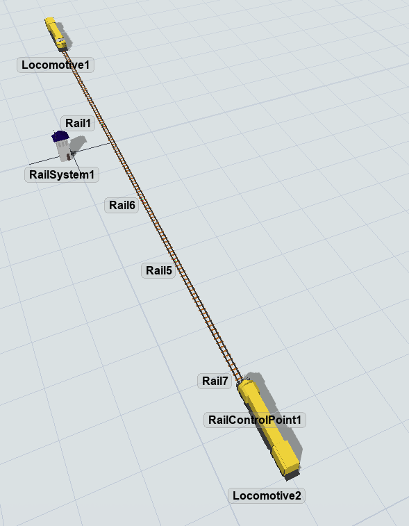
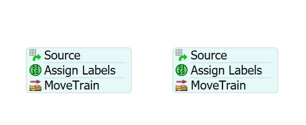
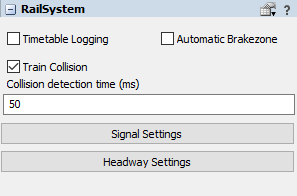
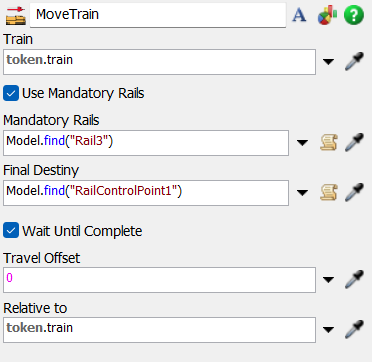
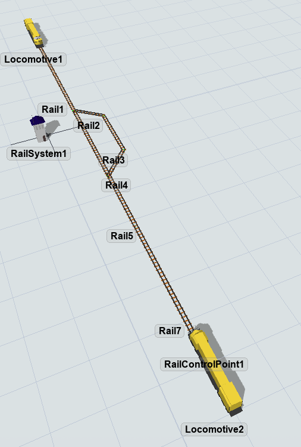

Exercise Information
Two trains travel on a single track, on opposite directions. The track has a single lane and
the two trains destination is on the other side of the track. Increment the main model by
adding a detour, allowing both trains to avoid collision and reach their destination.
Step 1 Track Layout
To create the track layout, follow the steps below:
- Drag 5 Rail objects to the model and connect them on a straight line.
- Drag 2 Locomotives and connect them to opposite ends of the track using the "A" key.
- Create 2 RailControlPoints at each end of the track.
Your model should be looking like this:

Step 2 Processflow Configuration
In order to achieve the solution for the problem, you should create the
following objects:
- Create two Schedule Sources, configure them to release 1 train at time 0.
- Create two AssignLabel, set the label name as "train" and the value as each respective locomotive.
- Create two MoveTrains, set one for each Train.
- Configure the MoveTrains to have the RailControlPoints as destination, on opposite sides.
Your Processflow should be looking like this:

Step 3 Collision Detection & Analysis
The first step to set collision detection is to drag any RailWorks object to model and
create a RailSystem.
To access the collision settings, follow the steps:
- Drag one Rail to the model.
- Access the RailSystem properties and mark the "Train Collision" checkbox.
- Proceed to set up a collision detection tick in milliseconds, 50 ms is a good startpoint.
- With these steps, collision detection is now activated.
- Run the model and identify the exact point where the trains collide.

Step 4 Mandatory Paths
In order to avoid the collision, do the following modification.
- Create a detour on the collision Rail, using 3 Rails.
- Connect them to create an alternative route to avoid traffic.
- Alter one of the MoveTrain activity by ticking the "Use Mandatory Rails" checkbox.
- Alter one of the MoveTrain activities to have the paralel detour rail as a MandatoryRail.
The MoveTrain activity should be similar to the image below.

Your model should be looking like this:
